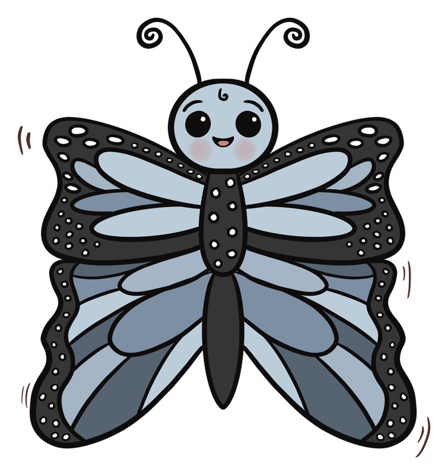
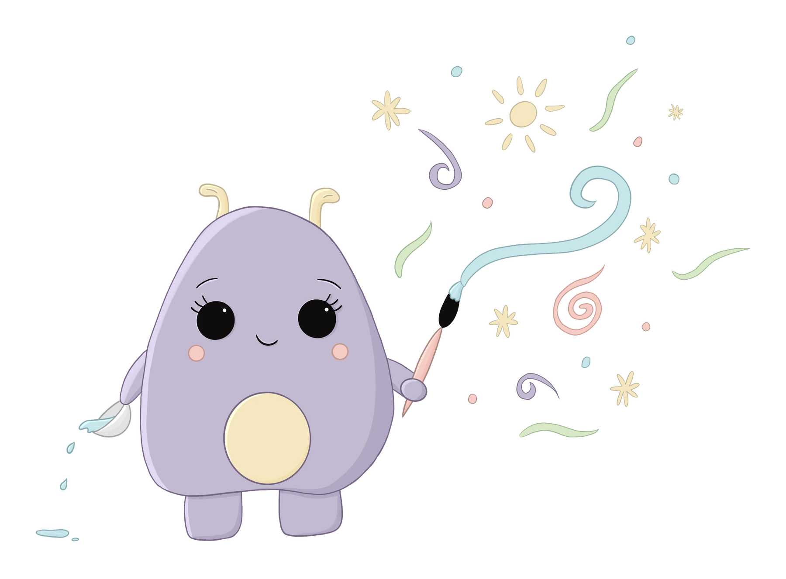
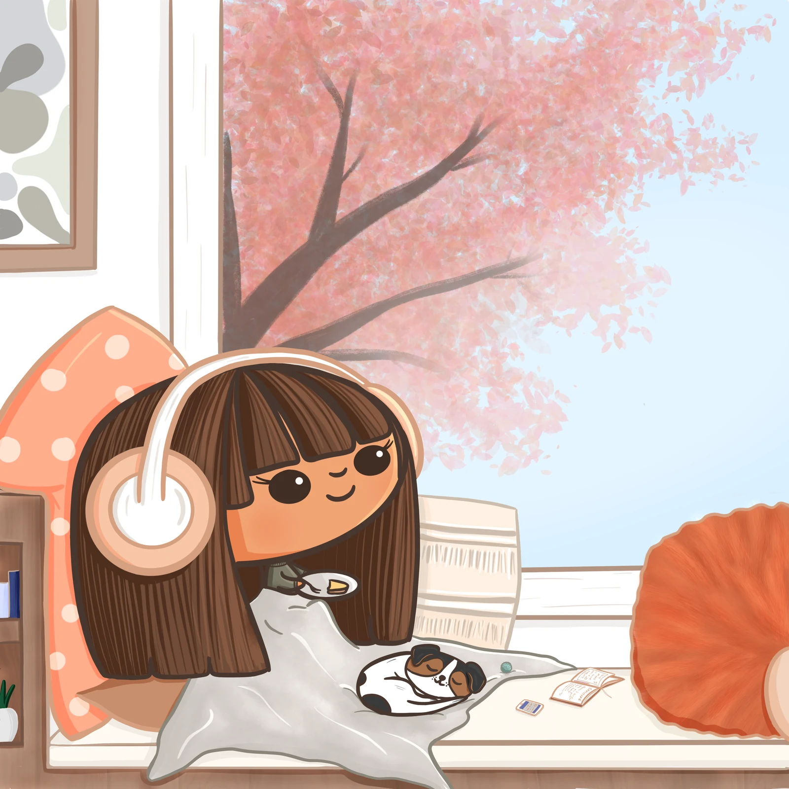
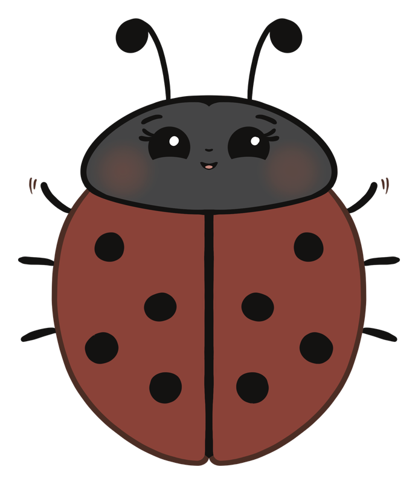

Children's Illustrator & Primary Educator
Aleesha Loos.
Playful stories for growing minds.
Sydney, Australia
A child's world, thoughtfully drawn
Little worlds.
A lot to feel.

I create expressive characters and stories shaped by the way children see the world: full of curiosity, small discoveries and feelings that can seem very big.
I'm Aleesha, a children's illustrator and primary educator. A career spent alongside children informs every world I draw.
Explore my work01 / Selected work
Characters, stories & small adventures
There is a story
in the smallest things.
A shared adventure. A quiet afternoon.
A little mischief along the way.
02 / A project close to my heart
In development
Little
Classroom
Friends.

Growing up brings big feelings.
A little friend can help.
Little Classroom Friends is a character-led project exploring feelings, friendship and finding a moment of calm.
It brings my illustration and classroom experience together through gentle stories and simple ideas, including breathing and calming activities, for the everyday challenges of growing up.
Let's talk about the project

03 / Hello, I'm Aleesha
A lifetime of drawing.
A career of listening.
I've spent my professional life in primary education, from classroom teaching to school leadership. Alongside it all, I've always drawn.
Working with children means paying attention: to what makes them laugh, what worries them, and the small moments that matter enormously. That understanding finds its way into my characters and the stories I want to tell.
Now I'm bringing those two parts of my life together, creating illustration for children with warmth, humour and room for imagination.
Aleesha
04 / Get in touch
Have a story
in mind?
For publishing projects, illustration commissions
and creative collaborations, I'd love to hear from you.